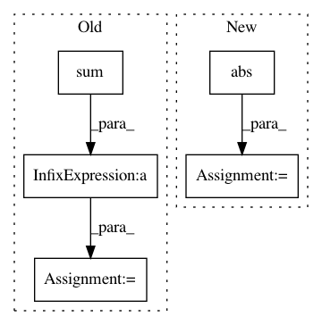

39dc6942a69a280cb6935c48c0d524d2dd2d9385,dipy/core/generalized_q_sampling.py,,triple_odf_maxima,#Any#Any#Any#,220
Before Change
indmax2, odfmax2 = equatorial_maximum(vertices,\
odf, vertices[indmax1], width)
cross12 = np.cross(vertices[indmax1],vertices[indmax2])
cross12 = cross12/np.sqrt(np.sum(cross12**2))
indmax3, odfmax3 = patch_maximum(vertices, odf, cross12, width)
return [(indmax1, odfmax1),(indmax2, odfmax2),(indmax3, odfmax3)]
After Change
eqvert = equatorial_zone_vertices(vertices, pole, width)
indmax2, odfmax2 = equatorial_maximum(vertices,\
odf, pole, width)
indmax3 = eqvert[np.argmin([np.abs(np.dot(vertices[indmax2],vertices[p])) for p in eqvert])]
odfmax3 = odf[indmax3]
"""
cross12 = np.cross(vertices[indmax1],vertices[indmax2])
cross12 = cross12/np.sqrt(np.sum(cross12**2))
indmax3, odfmax3 = patch_maximum(vertices, odf, cross12, 2*width)
In pattern: SUPERPATTERN
Frequency: 4
Non-data size: 5
Instances
Project Name: nipy/dipy
Commit Name: 39dc6942a69a280cb6935c48c0d524d2dd2d9385
Time: 2010-11-10
Author: iannimmosmith@gmail.com
File Name: dipy/core/generalized_q_sampling.py
Class Name:
Method Name: triple_odf_maxima
Project Name: LCAV/pyroomacoustics
Commit Name: a56207695af3f85640b9d69f317a56528431c760
Time: 2018-02-21
Author: fakufaku@gmail.com
File Name: pyroomacoustics/doa/frida.py
Class Name: FRIDA
Method Name: _visibilities
Project Name: tiberiu44/TTS-Cube
Commit Name: ab967e887ab37a3c15652f1e03aa7f490e3b1ebd
Time: 2018-11-05
Author: tibi@racai.ro
File Name: cube/models/vocoder.py
Class Name: BeeCoder
Method Name: learn
Project Name: SheffieldML/GPy
Commit Name: 2dc1b14934a1d22855e81e77a0f2eee52a0d1f7f
Time: 2015-10-04
Author: alan.daniel.saul@gmail.com
File Name: GPy/inference/latent_function_inference/laplace.py
Class Name: Laplace
Method Name: rasm_mode